Common name in Tamil : Kinnai, kinnari
Common name in Telugu : Kandia, peda kallinga
Common name in Singhalese : Kirala, kirilla
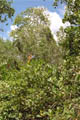
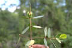
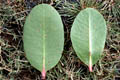
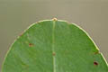
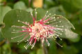
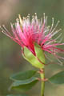
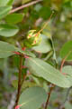
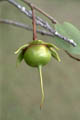
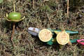
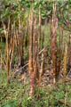
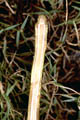
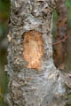
Diagnostic characters
Botany & morphology
Regeneration
Reproductive biology
Ecology
Distribution
Uses
Small tree up to 6 m tall, bark white; pneumatophores strong and prominent. Leaves opposite, mucronate at apex. Flowers reddish-purple; fruit berry, bowl shaped.
Leaves simple, opposite, elliptic - oblong or obovate, apex mucronate, base attenuate, entire, 5 - 10 x 3 - 5 cm, coriaceous; petiole short, reddish - pink at base.
Inflorescence solitary and terminal.
Flowers large, regular, bisexual, reddish - purple, 4 - 6 cm across; calyx deep green, tube flattened, 6 – lobed; petal 6, linear oblong, 2 cm long, membranous; anthers numerous, filaments red and white protrude from calyx; ovary depressed - globose, style nearly 3 cm long, stigma capitate.
Fruit green globose berry, 4-6 cm in across, with persistent calyx and pointed style.
Tree architecture shows attims’s model, branches low and spreading.
Pneumatophores many, corky, arising from horizontal roots, to spear - like points more than 20 cm above the mud.
Epigeal germination.
Pollination by bats and moths.
Common along intertidal banks along creeks and channels in mangrove forests. Also flourishing well in areas of fresh water inundation.
Bangladesh, Sri Lanka, S.E. Asia, Philippines and N. Australia. In India mangrove forests along both the coasts of the Indian peninsula and in Andaman and Nicobar Islands. In Sri Lanka, it occurs in southwestern part.
Stem used for paper pulp, matches, and as poles, leaves as fodder, fruits used as vegetable, pneumatophores used as a substitute for cork in Sri Lanka and for fishing floats.
Top of the page